01
Vila aprovada (conceito-mestre de estilo)
art/referencia/vila-aprovada.jpg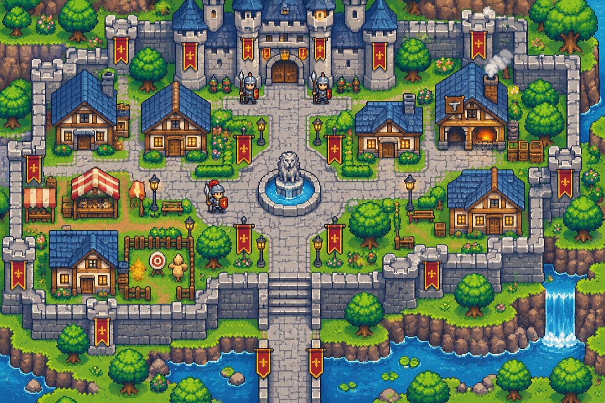
Registro completo da direção visual do projeto MiniMMO-Pixel: referência de estilo aprovada, paletas (vila 44 cores e masmorra +48 cores), telas na visão do jogador (aprovadas), telas panorâmicas rejeitadas, sprites frontais 32×32, chefe 64×64 e histórico de tentativas rejeitadas.
config.toml pela ponte antiga (conceitos A–C, tarefa 34). Os sprites foram reduzidos e travados na paleta por tools/pixelize.py e conferidos com tools/check_art.py (70 arquivo(s), 0 erro(s)). Clique em qualquer imagem para abrir a prévia em tamanho real e baixar, ou use os links diretos de download em cada cartão.
Estilo único definido pela vila enviada pelo Raffel, acompanhado das prévias geradas por script Python na grade 512×341 e das duas paletas oficiais do projeto.
art/referencia/vila-aprovada.jpg
art/referencia/vila-pixelizada-preview.png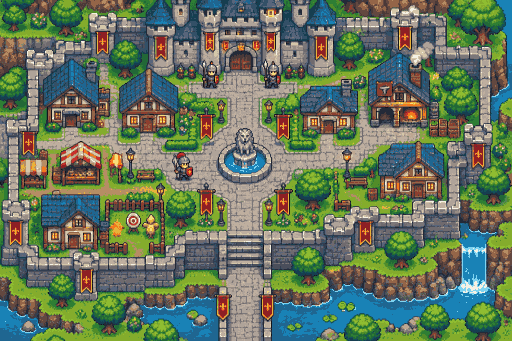
art/referencia/clima-masmorra-preview.png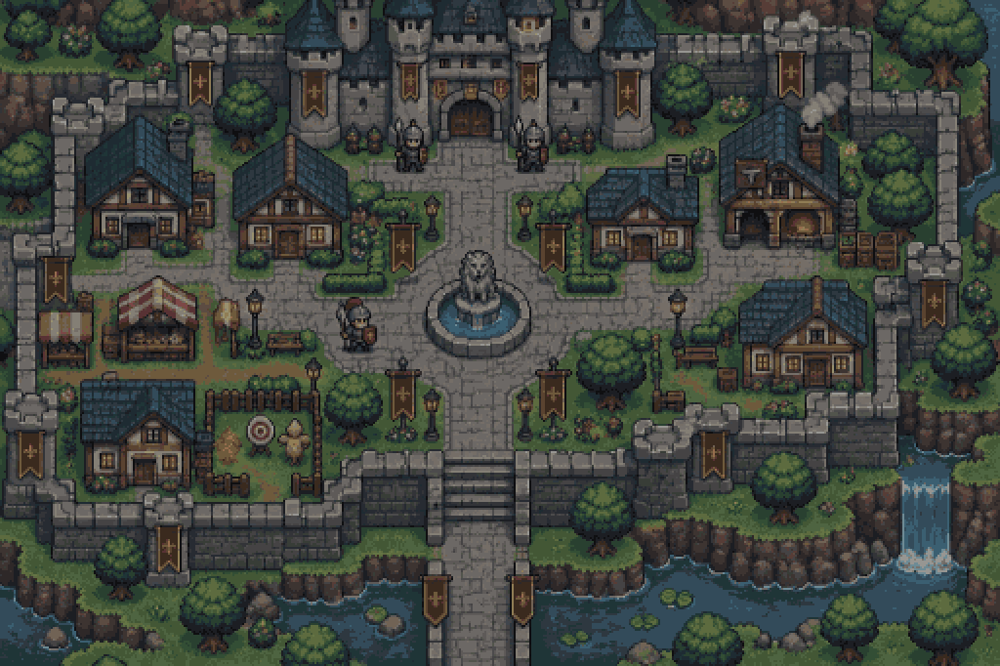
art/paleta.pngart/paleta-masmorra.pngMockups de gameplay (640×360 ampliados 3× com vizinho mais próximo para 1920×1080) gerados com Codex GPT-6.2 Sol (ImageGen), seguindo a câmera aproximada no jogador. Veredito geral: aprovadas como referência de clima; em todas elas o jogador ficou ligeiramente fora do centro exato, desvio aceitável para mockup. Os prompts e vereditos de todas as tentativas (v1, v2 e v3) foram preservados abaixo de cada tela.
art/conceitos/D-jogador-floresta-sombria.png · 1920×1080 (640×360 ampliado 3× nearest neighbor)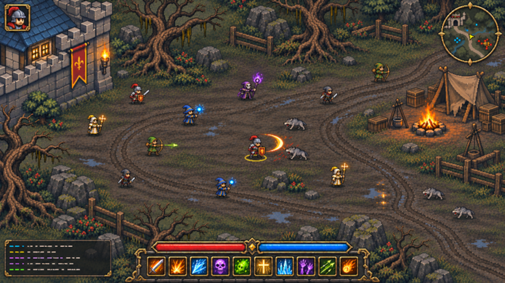
In-game screenshot of a 2D pixel art online action RPG, exactly what the player sees on a 1920x1080 monitor. Native resolution 640x360 upscaled 3x with nearest neighbor: every game pixel is a crisp 3x3 block, 16x16 tiles (48 screen px), characters about 72 screen px tall. Close gameplay camera that follows the player: the player's own character stands exactly in the center of the image with a thin gold ring under its feet. Top-down 3/4 orthographic view like the attached village (not isometric, not side view, no perspective, no sky, no horizon, no map edges); the world continues beyond all four edges. Same chunky drawing style, dark outlines and top-left light as the attached village, but with the earthy, grimy, darker colors of the second attached image: muted browns, moss greens, wet grey stone, old wood, mud. Only magic and fire are strongly colored. Players are the brightest, most colorful things on screen. Classes: red-silver knight with lion shield, blue-gold wizard with orb staff, purple skeleton necromancer, green-hooded archer, white-gold priest, grey-black rogue with two daggers. Diablo-style HUD at 3x pixel scale: centered bottom bar of dark stone with gold trim, red health bar and blue mana bar side by side, 10 small square skill slots with colorful skill icons; small portrait frame top-left; round minimap top-right; a small semi-transparent chat box bottom-left with unreadable pixel squiggles. No readable words, letters or numbers anywhere, no logos, no watermark, no known characters. The player is a red-silver knight swinging a sword in a golden arc at two grey wolves. Around: an archer and a wizard of the same party, a few other players passing by on the muddy dirt road with cart tracks. Twisted trees, broken fence, a small camp with a bonfire at one side. In one corner, the edge of the colorful village wall with a red banner, showing the village is close. Two more wolves at the edge of the road make four enemies total. Use case: stylized-concept. Generate one new full-bleed widescreen 16:9 game screenshot. Attachment 1 is the style and orthographic-angle reference. Attachment 2 is the palette reference. Attachment 3 supplies only environmental motifs and monster design; discard its panoramic layout, extra encounters and HUD proportions. Show a single local encounter on one traversable ground plane. Exactly eleven playable sprites: the selected avatar and ten others, clearly separated and visually countable, including the two specified nearby allies. The middle of the selected avatar's body is at normalized (0.500, 0.500); its thin, distinct gold ground ellipse directly beneath its feet. Draw the sprite's body about 6.67% of total image height, excluding effects and weapons, and use the same body scale for the other playable sprites. All actors stay at the same camera distance. Frame a small stretch of the area with trees, structures and ground cropped by the screen. Do not show the entire forest, graveyard or mine room. HUD is a small overlay and the portrait shows the selected class. Text-free HUD, with abstract dash clusters in chat only.
In-game screenshot of a 2D pixel art online action RPG, exactly what the player sees on a 1920x1080 monitor. Native resolution 640x360 upscaled 3x with nearest neighbor: every game pixel is a crisp 3x3 block, 16x16 tiles (48 screen px), characters about 72 screen px tall. Close gameplay camera that follows the player: the player's own character stands exactly in the center of the image with a thin gold ring under its feet. Top-down 3/4 orthographic view like the attached village (not isometric, not side view, no perspective, no sky, no horizon, no map edges); the world continues beyond all four edges. Same chunky drawing style, dark outlines and top-left light as the attached village, but with the earthy, grimy, darker colors of the second attached image: muted browns, moss greens, wet grey stone, old wood, mud. Only magic and fire are strongly colored. Players are the brightest, most colorful things on screen. Classes: red-silver knight with lion shield, blue-gold wizard with orb staff, purple skeleton necromancer, green-hooded archer, white-gold priest, grey-black rogue with two daggers. Diablo-style HUD at 3x pixel scale: centered bottom bar of dark stone with gold trim, red health bar and blue mana bar side by side, 10 small square skill slots with colorful skill icons; small portrait frame top-left; round minimap top-right; a small semi-transparent chat box bottom-left with unreadable pixel squiggles. No readable words, letters or numbers anywhere, no logos, no watermark, no known characters. The player is a red-silver knight swinging a sword in a golden arc at two grey wolves. Around: an archer and a wizard of the same party, a few other players passing by on the muddy dirt road with cart tracks. Twisted trees, broken fence, a small camp with a bonfire at one side. In one corner, the edge of the colorful village wall with a red banner, showing the village is close. Two more wolves at the edge of the road make four enemies total. Use case: stylized-concept. Generate one new full-bleed widescreen 16:9 game screenshot. Attachment 1 is the style and orthographic-angle reference. Attachment 2 is the palette reference. Attachment 3 supplies only environmental motifs and monster design; discard its panoramic layout, extra encounters and HUD proportions. Show a single local encounter on one traversable ground plane. Exactly eleven playable sprites: the selected avatar and ten others, clearly separated and visually countable, including the two specified nearby allies. The middle of the selected avatar's body is at normalized (0.500, 0.500); its thin, distinct gold ground ellipse directly beneath its feet. Draw the sprite's body about 6.67% of total image height, excluding effects and weapons, and use the same body scale for the other playable sprites. All actors stay at the same camera distance. Frame a small stretch of the area with trees, structures and ground cropped by the screen. Do not show the entire forest, graveyard or mine room. HUD is a small overlay and the portrait shows the selected class. Text-free HUD, with abstract dash clusters in chat only. Attachment 4 is the first draft of this scene. Correct its sprite scale: the first draft draws humans about 140 pixels tall; make every playable character sprite approximately HALF as tall relative to the frame as attachment 4. This is a strict size correction, not a panoramic overview. Keep the local view, the same low actor count and stage of the encounter, and a comparable amount of scenery. Draw the characters with simple 16-by-24 native pixel anatomy on the 640×360 canvas: each avatar's entire headgear and boots fit within 24 rows; the full frame is fifteen avatar heights tall. Center the hero's torso at (320,180) on that canvas, and place the gold ring immediately below their boots. Keep only one health/mana pair at the bottom.
In-game screenshot of a 2D pixel art online action RPG, exactly what the player sees on a 1920x1080 monitor. Native resolution 640x360 upscaled 3x with nearest neighbor: every game pixel is a crisp 3x3 block, 16x16 tiles (48 screen px), characters about 72 screen px tall. Close gameplay camera that follows the player: the player's own character stands exactly in the center of the image with a thin gold ring under its feet. Top-down 3/4 orthographic view like the attached village (not isometric, not side view, no perspective, no sky, no horizon, no map edges); the world continues beyond all four edges. Same chunky drawing style, dark outlines and top-left light as the attached village, but with the earthy, grimy, darker colors of the second attached image: muted browns, moss greens, wet grey stone, old wood, mud. Only magic and fire are strongly colored. Players are the brightest, most colorful things on screen. Classes: red-silver knight with lion shield, blue-gold wizard with orb staff, purple skeleton necromancer, green-hooded archer, white-gold priest, grey-black rogue with two daggers. Diablo-style HUD at 3x pixel scale: centered bottom bar of dark stone with gold trim, red health bar and blue mana bar side by side, 10 small square skill slots with colorful skill icons; small portrait frame top-left; round minimap top-right; a small semi-transparent chat box bottom-left with unreadable pixel squiggles. No readable words, letters or numbers anywhere, no logos, no watermark, no known characters. The player is a red-silver knight swinging a sword in a golden arc at two grey wolves. Around: an archer and a wizard of the same party, a few other players passing by on the muddy dirt road with cart tracks. Twisted trees, broken fence, a small camp with a bonfire at one side. In one corner, the edge of the colorful village wall with a red banner, showing the village is close. Two more wolves at the edge of the road make four enemies total. Use case: stylized-concept. Generate one new full-bleed widescreen 16:9 game screenshot. Attachment 1 is the style and orthographic-angle reference. Attachment 2 is the palette reference. Attachment 3 supplies only environmental motifs and monster design; discard its panoramic layout, extra encounters and HUD proportions. Show a single local encounter on one traversable ground plane. Exactly eleven playable sprites: the selected avatar and ten others, clearly separated and visually countable, including the two specified nearby allies. The middle of the selected avatar's body is at normalized (0.500, 0.500); its thin, distinct gold ground ellipse directly beneath its feet. Draw the sprite's body about 6.67% of total image height, excluding effects and weapons, and use the same body scale for the other playable sprites. All actors stay at the same camera distance. Frame a small stretch of the area with trees, structures and ground cropped by the screen. Do not show the entire forest, graveyard or mine room. HUD is a small overlay and the portrait shows the selected class. Text-free HUD, with abstract dash clusters in chat only. Use attachment 4 as the layout to revise. Preserve its local encounter framing and all fixed terrain, route layout and distances between props. Current character bodies are about 100–110 px on a normalized 1920×1080 screen. Reduce sprite bodies to 70% of their size in attachment 4, from top of hat or plume to boot soles, excluding weapons. Do not zoom the camera out or add more terrain. Have the selected playable character occupy rows 504–575 of the normalized 1080-pixel frame and be centered at x=960. Its feet are near y=575, with the gold ellipse directly below. Position the main character farther right and down slightly compared with attachment 4 while shrinking the sprite. Keep the HUD free of letters and numbers. Remove the duplicate red and blue bars beside the top-left portrait; show just the small portrait there.
art/conceitos/E-jogador-cemiterio-antigo.png · 1920×1080 (640×360 ampliado 3× nearest neighbor)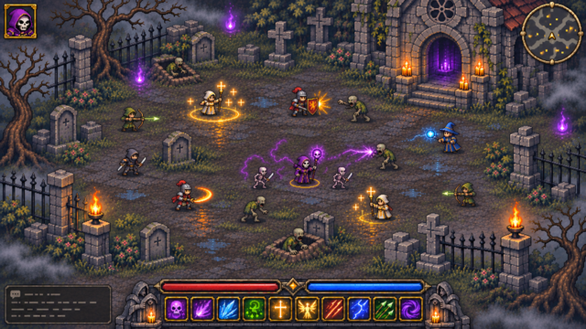
In-game screenshot of a 2D pixel art online action RPG, exactly what the player sees on a 1920x1080 monitor. Native resolution 640x360 upscaled 3x with nearest neighbor: every game pixel is a crisp 3x3 block, 16x16 tiles (48 screen px), characters about 72 screen px tall. Close gameplay camera that follows the player: the player's own character stands exactly in the center of the image with a thin gold ring under its feet. Top-down 3/4 orthographic view like the attached village (not isometric, not side view, no perspective, no sky, no horizon, no map edges); the world continues beyond all four edges. Same chunky drawing style, dark outlines and top-left light as the attached village, but with the earthy, grimy, darker colors of the second attached image: muted browns, moss greens, wet grey stone, old wood, mud. Only magic and fire are strongly colored. Players are the brightest, most colorful things on screen. Classes: red-silver knight with lion shield, blue-gold wizard with orb staff, purple skeleton necromancer, green-hooded archer, white-gold priest, grey-black rogue with two daggers. Diablo-style HUD at 3x pixel scale: centered bottom bar of dark stone with gold trim, red health bar and blue mana bar side by side, 10 small square skill slots with colorful skill icons; small portrait frame top-left; round minimap top-right; a small semi-transparent chat box bottom-left with unreadable pixel squiggles. No readable words, letters or numbers anywhere, no logos, no watermark, no known characters. The player is a purple skeleton necromancer with two summoned skeletons beside it, fighting zombies rising from graves. Nearby a priest casting a gold healing circle and a knight blocking. Crooked gravestones, iron fence, an open crypt, purple wisps and low fog, part of a ruined chapel wall cut by the top edge. Five zombies total, with moss-green clothing to differentiate them from the two bone-white allied summons. Use case: stylized-concept. Generate one new full-bleed widescreen 16:9 game screenshot. Attachment 1 is the style and orthographic-angle reference. Attachment 2 is the palette reference. Attachment 3 supplies only environmental motifs and monster design; discard its panoramic layout, extra encounters and HUD proportions. Show a single local encounter on one traversable ground plane. Exactly eleven playable sprites: the selected avatar and ten others, clearly separated and visually countable, including the two specified nearby allies. The middle of the selected avatar's body is at normalized (0.500, 0.500); its thin, distinct gold ground ellipse directly beneath its feet. Draw the sprite's body about 6.67% of total image height, excluding effects and weapons, and use the same body scale for the other playable sprites. All actors stay at the same camera distance. Frame a small stretch of the area with trees, structures and ground cropped by the screen. Do not show the entire forest, graveyard or mine room. HUD is a small overlay and the portrait shows the selected class. Text-free HUD, with abstract dash clusters in chat only.
In-game screenshot of a 2D pixel art online action RPG, exactly what the player sees on a 1920x1080 monitor. Native resolution 640x360 upscaled 3x with nearest neighbor: every game pixel is a crisp 3x3 block, 16x16 tiles (48 screen px), characters about 72 screen px tall. Close gameplay camera that follows the player: the player's own character stands exactly in the center of the image with a thin gold ring under its feet. Top-down 3/4 orthographic view like the attached village (not isometric, not side view, no perspective, no sky, no horizon, no map edges); the world continues beyond all four edges. Same chunky drawing style, dark outlines and top-left light as the attached village, but with the earthy, grimy, darker colors of the second attached image: muted browns, moss greens, wet grey stone, old wood, mud. Only magic and fire are strongly colored. Players are the brightest, most colorful things on screen. Classes: red-silver knight with lion shield, blue-gold wizard with orb staff, purple skeleton necromancer, green-hooded archer, white-gold priest, grey-black rogue with two daggers. Diablo-style HUD at 3x pixel scale: centered bottom bar of dark stone with gold trim, red health bar and blue mana bar side by side, 10 small square skill slots with colorful skill icons; small portrait frame top-left; round minimap top-right; a small semi-transparent chat box bottom-left with unreadable pixel squiggles. No readable words, letters or numbers anywhere, no logos, no watermark, no known characters. The player is a purple skeleton necromancer with two summoned skeletons beside it, fighting zombies rising from graves. Nearby a priest casting a gold healing circle and a knight blocking. Crooked gravestones, iron fence, an open crypt, purple wisps and low fog, part of a ruined chapel wall cut by the top edge. Five zombies total, with moss-green clothing to differentiate them from the two bone-white allied summons. Use case: stylized-concept. Generate one new full-bleed widescreen 16:9 game screenshot. Attachment 1 is the style and orthographic-angle reference. Attachment 2 is the palette reference. Attachment 3 supplies only environmental motifs and monster design; discard its panoramic layout, extra encounters and HUD proportions. Show a single local encounter on one traversable ground plane. Exactly eleven playable sprites: the selected avatar and ten others, clearly separated and visually countable, including the two specified nearby allies. The middle of the selected avatar's body is at normalized (0.500, 0.500); its thin, distinct gold ground ellipse directly beneath its feet. Draw the sprite's body about 6.67% of total image height, excluding effects and weapons, and use the same body scale for the other playable sprites. All actors stay at the same camera distance. Frame a small stretch of the area with trees, structures and ground cropped by the screen. Do not show the entire forest, graveyard or mine room. HUD is a small overlay and the portrait shows the selected class. Text-free HUD, with abstract dash clusters in chat only. Attachment 4 is the first draft of this scene. Correct its sprite scale: the first draft draws humans about 140 pixels tall; make every playable character sprite approximately HALF as tall relative to the frame as attachment 4. This is a strict size correction, not a panoramic overview. Keep the local view, the same low actor count and stage of the encounter, and a comparable amount of scenery. Draw the characters with simple 16-by-24 native pixel anatomy on the 640×360 canvas: each avatar's entire headgear and boots fit within 24 rows; the full frame is fifteen avatar heights tall. Center the hero's torso at (320,180) on that canvas, and place the gold ring immediately below their boots. Keep only one health/mana pair at the bottom. Show five distinct zombies around open graves, in addition to the two allied skeletons.
In-game screenshot of a 2D pixel art online action RPG, exactly what the player sees on a 1920x1080 monitor. Native resolution 640x360 upscaled 3x with nearest neighbor: every game pixel is a crisp 3x3 block, 16x16 tiles (48 screen px), characters about 72 screen px tall. Close gameplay camera that follows the player: the player's own character stands exactly in the center of the image with a thin gold ring under its feet. Top-down 3/4 orthographic view like the attached village (not isometric, not side view, no perspective, no sky, no horizon, no map edges); the world continues beyond all four edges. Same chunky drawing style, dark outlines and top-left light as the attached village, but with the earthy, grimy, darker colors of the second attached image: muted browns, moss greens, wet grey stone, old wood, mud. Only magic and fire are strongly colored. Players are the brightest, most colorful things on screen. Classes: red-silver knight with lion shield, blue-gold wizard with orb staff, purple skeleton necromancer, green-hooded archer, white-gold priest, grey-black rogue with two daggers. Diablo-style HUD at 3x pixel scale: centered bottom bar of dark stone with gold trim, red health bar and blue mana bar side by side, 10 small square skill slots with colorful skill icons; small portrait frame top-left; round minimap top-right; a small semi-transparent chat box bottom-left with unreadable pixel squiggles. No readable words, letters or numbers anywhere, no logos, no watermark, no known characters. The player is a purple skeleton necromancer with two summoned skeletons beside it, fighting zombies rising from graves. Nearby a priest casting a gold healing circle and a knight blocking. Crooked gravestones, iron fence, an open crypt, purple wisps and low fog, part of a ruined chapel wall cut by the top edge. Five zombies total, with moss-green clothing to differentiate them from the two bone-white allied summons. Use case: stylized-concept. Generate one new full-bleed widescreen 16:9 game screenshot. Attachment 1 is the style and orthographic-angle reference. Attachment 2 is the palette reference. Attachment 3 supplies only environmental motifs and monster design; discard its panoramic layout, extra encounters and HUD proportions. Show a single local encounter on one traversable ground plane. Exactly eleven playable sprites: the selected avatar and ten others, clearly separated and visually countable, including the two specified nearby allies. The middle of the selected avatar's body is at normalized (0.500, 0.500); its thin, distinct gold ground ellipse directly beneath its feet. Draw the sprite's body about 6.67% of total image height, excluding effects and weapons, and use the same body scale for the other playable sprites. All actors stay at the same camera distance. Frame a small stretch of the area with trees, structures and ground cropped by the screen. Do not show the entire forest, graveyard or mine room. HUD is a small overlay and the portrait shows the selected class. Text-free HUD, with abstract dash clusters in chat only. Use attachment 4 as the layout to revise. Preserve its local encounter framing and all fixed terrain, route layout and distances between props. Current character bodies are about 100–110 px on a normalized 1920×1080 screen. Reduce sprite bodies to 70% of their size in attachment 4, from top of hat or plume to boot soles, excluding weapons. Do not zoom the camera out or add more terrain. Have the selected playable character occupy rows 504–575 of the normalized 1080-pixel frame and be centered at x=960. Its feet are near y=575, with the gold ellipse directly below. Position the main character farther right and down slightly compared with attachment 4 while shrinking the sprite. Keep the HUD free of letters and numbers. Remove the duplicate red and blue bars beside the top-left portrait; show just the small portrait there. Add a green zombie climbing halfway out of each of the two visible open graves, making FIVE green zombies with the three existing ones; keep two pale allied skeletons.
art/conceitos/F-jogador-minas-abandonadas.png · 1920×1080 (640×360 ampliado 3× nearest neighbor)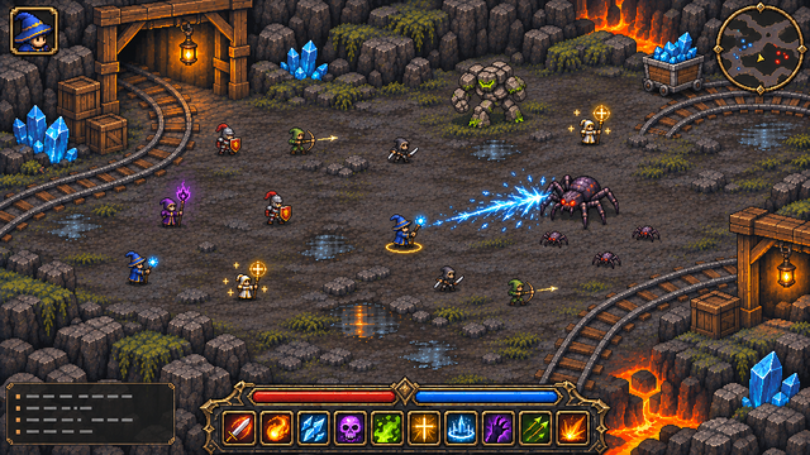
In-game screenshot of a 2D pixel art online action RPG, exactly what the player sees on a 1920x1080 monitor. Native resolution 640x360 upscaled 3x with nearest neighbor: every game pixel is a crisp 3x3 block, 16x16 tiles (48 screen px), characters about 72 screen px tall. Close gameplay camera that follows the player: the player's own character stands exactly in the center of the image with a thin gold ring under its feet. Top-down 3/4 orthographic view like the attached village (not isometric, not side view, no perspective, no sky, no horizon, no map edges); the world continues beyond all four edges. Same chunky drawing style, dark outlines and top-left light as the attached village, but with the earthy, grimy, darker colors of the second attached image: muted browns, moss greens, wet grey stone, old wood, mud. Only magic and fire are strongly colored. Players are the brightest, most colorful things on screen. Classes: red-silver knight with lion shield, blue-gold wizard with orb staff, purple skeleton necromancer, green-hooded archer, white-gold priest, grey-black rogue with two daggers. Diablo-style HUD at 3x pixel scale: centered bottom bar of dark stone with gold trim, red health bar and blue mana bar side by side, 10 small square skill slots with colorful skill icons; small portrait frame top-left; round minimap top-right; a small semi-transparent chat box bottom-left with unreadable pixel squiggles. No readable words, letters or numbers anywhere, no logos, no watermark, no known characters. The player is a blue-gold wizard casting a blue frost blast at a giant cave spider. Nearby a rogue and an archer, a stone golem further away. Rock floor with minecart rails crossing the screen, wooden support beams, glowing orange lava cracks, blue crystals, a lantern. Three small spiders nearby make five enemies in total. Use case: stylized-concept. Generate one new full-bleed widescreen 16:9 game screenshot. Attachment 1 is the style and orthographic-angle reference. Attachment 2 is the palette reference. Attachment 3 supplies only environmental motifs and monster design; discard its panoramic layout, extra encounters and HUD proportions. Show a single local encounter on one traversable ground plane. Exactly eleven playable sprites: the selected avatar and ten others, clearly separated and visually countable, including the two specified nearby allies. The middle of the selected avatar's body is at normalized (0.500, 0.500); its thin, distinct gold ground ellipse directly beneath its feet. Draw the sprite's body about 6.67% of total image height, excluding effects and weapons, and use the same body scale for the other playable sprites. All actors stay at the same camera distance. Frame a small stretch of the area with trees, structures and ground cropped by the screen. Do not show the entire forest, graveyard or mine room. HUD is a small overlay and the portrait shows the selected class. Text-free HUD, with abstract dash clusters in chat only.
In-game screenshot of a 2D pixel art online action RPG, exactly what the player sees on a 1920x1080 monitor. Native resolution 640x360 upscaled 3x with nearest neighbor: every game pixel is a crisp 3x3 block, 16x16 tiles (48 screen px), characters about 72 screen px tall. Close gameplay camera that follows the player: the player's own character stands exactly in the center of the image with a thin gold ring under its feet. Top-down 3/4 orthographic view like the attached village (not isometric, not side view, no perspective, no sky, no horizon, no map edges); the world continues beyond all four edges. Same chunky drawing style, dark outlines and top-left light as the attached village, but with the earthy, grimy, darker colors of the second attached image: muted browns, moss greens, wet grey stone, old wood, mud. Only magic and fire are strongly colored. Players are the brightest, most colorful things on screen. Classes: red-silver knight with lion shield, blue-gold wizard with orb staff, purple skeleton necromancer, green-hooded archer, white-gold priest, grey-black rogue with two daggers. Diablo-style HUD at 3x pixel scale: centered bottom bar of dark stone with gold trim, red health bar and blue mana bar side by side, 10 small square skill slots with colorful skill icons; small portrait frame top-left; round minimap top-right; a small semi-transparent chat box bottom-left with unreadable pixel squiggles. No readable words, letters or numbers anywhere, no logos, no watermark, no known characters. The player is a blue-gold wizard casting a blue frost blast at a giant cave spider. Nearby a rogue and an archer, a stone golem further away. Rock floor with minecart rails crossing the screen, wooden support beams, glowing orange lava cracks, blue crystals, a lantern. Three small spiders nearby make five enemies in total. Use case: stylized-concept. Generate one new full-bleed widescreen 16:9 game screenshot. Attachment 1 is the style and orthographic-angle reference. Attachment 2 is the palette reference. Attachment 3 supplies only environmental motifs and monster design; discard its panoramic layout, extra encounters and HUD proportions. Show a single local encounter on one traversable ground plane. Exactly eleven playable sprites: the selected avatar and ten others, clearly separated and visually countable, including the two specified nearby allies. The middle of the selected avatar's body is at normalized (0.500, 0.500); its thin, distinct gold ground ellipse directly beneath its feet. Draw the sprite's body about 6.67% of total image height, excluding effects and weapons, and use the same body scale for the other playable sprites. All actors stay at the same camera distance. Frame a small stretch of the area with trees, structures and ground cropped by the screen. Do not show the entire forest, graveyard or mine room. HUD is a small overlay and the portrait shows the selected class. Text-free HUD, with abstract dash clusters in chat only. Attachment 4 is the first draft of this scene. Correct its sprite scale: the first draft draws humans about 140 pixels tall; make every playable character sprite approximately HALF as tall relative to the frame as attachment 4. This is a strict size correction, not a panoramic overview. Keep the local view, the same low actor count and stage of the encounter, and a comparable amount of scenery. Draw the characters with simple 16-by-24 native pixel anatomy on the 640×360 canvas: each avatar's entire headgear and boots fit within 24 rows; the full frame is fifteen avatar heights tall. Center the hero's torso at (320,180) on that canvas, and place the gold ring immediately below their boots. Keep only one health/mana pair at the bottom.
In-game screenshot of a 2D pixel art online action RPG, exactly what the player sees on a 1920x1080 monitor. Native resolution 640x360 upscaled 3x with nearest neighbor: every game pixel is a crisp 3x3 block, 16x16 tiles (48 screen px), characters about 72 screen px tall. Close gameplay camera that follows the player: the player's own character stands exactly in the center of the image with a thin gold ring under its feet. Top-down 3/4 orthographic view like the attached village (not isometric, not side view, no perspective, no sky, no horizon, no map edges); the world continues beyond all four edges. Same chunky drawing style, dark outlines and top-left light as the attached village, but with the earthy, grimy, darker colors of the second attached image: muted browns, moss greens, wet grey stone, old wood, mud. Only magic and fire are strongly colored. Players are the brightest, most colorful things on screen. Classes: red-silver knight with lion shield, blue-gold wizard with orb staff, purple skeleton necromancer, green-hooded archer, white-gold priest, grey-black rogue with two daggers. Diablo-style HUD at 3x pixel scale: centered bottom bar of dark stone with gold trim, red health bar and blue mana bar side by side, 10 small square skill slots with colorful skill icons; small portrait frame top-left; round minimap top-right; a small semi-transparent chat box bottom-left with unreadable pixel squiggles. No readable words, letters or numbers anywhere, no logos, no watermark, no known characters. The player is a blue-gold wizard casting a blue frost blast at a giant cave spider. Nearby a rogue and an archer, a stone golem further away. Rock floor with minecart rails crossing the screen, wooden support beams, glowing orange lava cracks, blue crystals, a lantern. Three small spiders nearby make five enemies in total. Use case: stylized-concept. Generate one new full-bleed widescreen 16:9 game screenshot. Attachment 1 is the style and orthographic-angle reference. Attachment 2 is the palette reference. Attachment 3 supplies only environmental motifs and monster design; discard its panoramic layout, extra encounters and HUD proportions. Show a single local encounter on one traversable ground plane. Exactly eleven playable sprites: the selected avatar and ten others, clearly separated and visually countable, including the two specified nearby allies. The middle of the selected avatar's body is at normalized (0.500, 0.500); its thin, distinct gold ground ellipse directly beneath its feet. Draw the sprite's body about 6.67% of total image height, excluding effects and weapons, and use the same body scale for the other playable sprites. All actors stay at the same camera distance. Frame a small stretch of the area with trees, structures and ground cropped by the screen. Do not show the entire forest, graveyard or mine room. HUD is a small overlay and the portrait shows the selected class. Text-free HUD, with abstract dash clusters in chat only. Use attachment 4 as the layout to revise. Preserve its local encounter framing and all fixed terrain, route layout and distances between props. Current character bodies are about 100–110 px on a normalized 1920×1080 screen. Reduce sprite bodies to 70% of their size in attachment 4, from top of hat or plume to boot soles, excluding weapons. Do not zoom the camera out or add more terrain. Have the selected playable character occupy rows 504–575 of the normalized 1080-pixel frame and be centered at x=960. Its feet are near y=575, with the gold ellipse directly below. Position the main character farther down by about 40 pixels (move both the wizard and his selection ring) compared with attachment 4 while shrinking the sprite. Keep the HUD free of letters and numbers.
Primeira rodada de conceitos de área (tarefa 34 da ponte antiga, 34-minimmo-areas-conceito.md), gerada pelo Codex (modelo do config.toml). Motivo da rejeição: câmera panorâmica de paisagem com personagens minúsculos, que não representa a visão real do jogador.
art/rejeitadas/conceitos/A-floresta-sombria--camera-de-paisagem.png · 1920×1080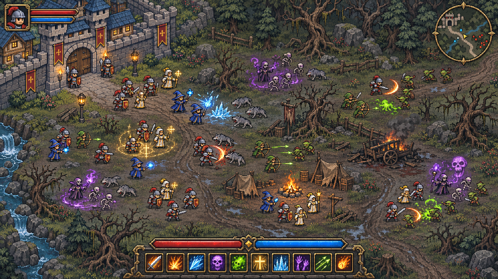
Copiado de D:\AI Workshop\Codex\Bridge\feitas\34-minimmo-areas-conceito.md
In-game screenshot mockup of a 2D pixel art online action RPG (Diablo-like mood), 16:9, top-down 3/4 camera (not isometric, not side view), same chunky pixel drawing style, dark outlines and light from top-left as the first attached village image, but with the earthy, grimy, darker colors of the second attached image: muted browns, moss greens, wet grey stone, old wood, mud, low saturation. The only strong colors are magic and fire: purple necromancy, sickly green, torch orange, blue frost. Visible pixel grid, 16x16 tiles, characters about 1.5 tiles tall. MANY players on screen at once (about 30 to 40 small adventurers in red-silver knight armor, blue wizard robes, purple skeleton necromancers, green-hooded archers, white-gold priests), spread around in small groups, fighting monsters with colorful spell effects. Players are the brightest, most colorful things on screen so they stand out from the dark ground. Diablo-style HUD: centered bottom bar of dark stone with gold trim, red health bar and blue mana bar side by side on top, a row of 10 small square skill slots under them; small portrait frame top-left; round minimap top-right. No readable words anywhere: no letters, no numbers, no logos, no watermark, no known characters. Dark forest right outside the village. Top-left corner shows the edge of the bright colorful village wall and gate (blue roofs, red banners) and a dirt road leading out; as the road goes down-right the colors get darker and grimier. Twisted trees, mud with cart tracks, broken fences, a burned wagon, a small camp with a bonfire. Groups of players fighting gray wolves and green goblins.
art/rejeitadas/conceitos/B-cemiterio-antigo--camera-de-paisagem.png · 1920×1080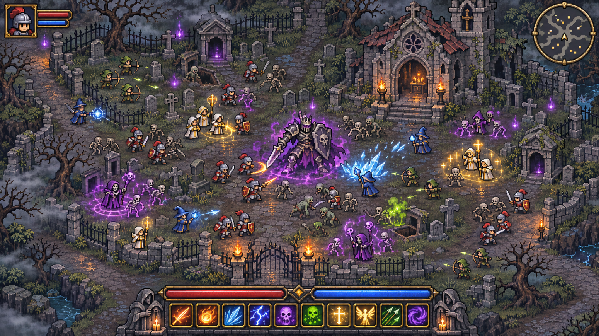
Copiado de D:\AI Workshop\Codex\Bridge\feitas\34-minimmo-areas-conceito.md
In-game screenshot mockup of a 2D pixel art online action RPG (Diablo-like mood), 16:9, top-down 3/4 camera (not isometric, not side view), same chunky pixel drawing style, dark outlines and light from top-left as the first attached village image, but with the earthy, grimy, darker colors of the second attached image: muted browns, moss greens, wet grey stone, old wood, mud, low saturation. The only strong colors are magic and fire: purple necromancy, sickly green, torch orange, blue frost. Visible pixel grid, 16x16 tiles, characters about 1.5 tiles tall. MANY players on screen at once (about 30 to 40 small adventurers in red-silver knight armor, blue wizard robes, purple skeleton necromancers, green-hooded archers, white-gold priests), spread around in small groups, fighting monsters with colorful spell effects. Players are the brightest, most colorful things on screen so they stand out from the dark ground. Diablo-style HUD: centered bottom bar of dark stone with gold trim, red health bar and blue mana bar side by side on top, a row of 10 small square skill slots under them; small portrait frame top-left; round minimap top-right. No readable words anywhere: no letters, no numbers, no logos, no watermark, no known characters. Old cemetery and ruined chapel at night: crooked gravestones, iron fences, open crypts, purple will-o'-wisps, fog patches, dead trees. Players fighting skeletons and zombies coming out of graves; a large undead knight mini-boss with a purple aura in the middle and many players around it.
art/rejeitadas/conceitos/C-minas-abandonadas--camera-de-paisagem.png · 1920×1080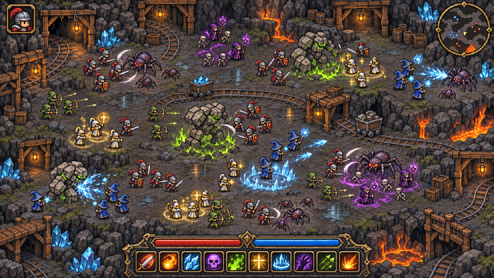
Copiado de D:\AI Workshop\Codex\Bridge\feitas\34-minimmo-areas-conceito.md
In-game screenshot mockup of a 2D pixel art online action RPG (Diablo-like mood), 16:9, top-down 3/4 camera (not isometric, not side view), same chunky pixel drawing style, dark outlines and light from top-left as the first attached village image, but with the earthy, grimy, darker colors of the second attached image: muted browns, moss greens, wet grey stone, old wood, mud, low saturation. The only strong colors are magic and fire: purple necromancy, sickly green, torch orange, blue frost. Visible pixel grid, 16x16 tiles, characters about 1.5 tiles tall. MANY players on screen at once (about 30 to 40 small adventurers in red-silver knight armor, blue wizard robes, purple skeleton necromancers, green-hooded archers, white-gold priests), spread around in small groups, fighting monsters with colorful spell effects. Players are the brightest, most colorful things on screen so they stand out from the dark ground. Diablo-style HUD: centered bottom bar of dark stone with gold trim, red health bar and blue mana bar side by side on top, a row of 10 small square skill slots under them; small portrait frame top-left; round minimap top-right. No readable words anywhere: no letters, no numbers, no logos, no watermark, no known characters. Abandoned dwarven mine cave: rock walls, wooden support beams, rail tracks with minecarts, glowing orange lava cracks and blue crystals, lanterns. Players fighting giant cave spiders and stone golems; a wide open cavern so many players fit.
Seis classes jogáveis (paleta da vila, 32×32), três monstros e um chefe 64×64 (paleta da masmorra). Gerados pelo Codex GPT-6.2 Sol, convertidos com tools/pixelize.py e conferidos com tools/check_art.py (0 erros). Cada cartão mostra a prévia ampliada 8× com vizinho mais próximo e oferece download tanto da prévia 8× quanto do arquivo nativo 32×32 ou 64×64.
art/paleta.hex para ser aprovado na v3.
art/rascunho/prancha-sprites-8x.png · 2816×512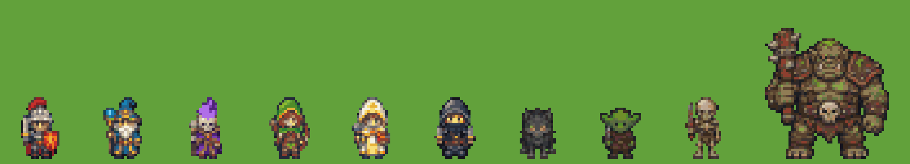
art/personagens/cavaleiro-frente.png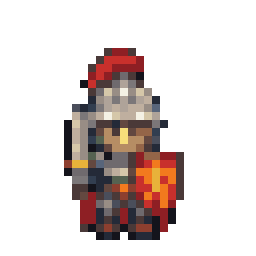
Pixel art sprite for a top-down 3/4 fantasy medieval RPG, matching the attached village reference exactly: same crisp dark 1px-style outline, same light from top-left, same orthogonal top-down 3/4 camera (not isometric, not side view), same character palette and style as the small village guards, especially the red-plumed guard by the fountain. Subject: one front-facing idle chibi knight with silver armor, visible face with eyes under open helmet, red cape, red helmet plume, compact red shield with gold lion silhouette and a short silver sword held close upright. Size feel: complete silhouette fits 16x24 inside 32x32, proportion width:height about 2:3. Very simple chunky shapes, big head, few details, readable at 32x32. Make both eyes large enough to survive reduction. Face and both boots point directly toward viewer, slightly elevated orthogonal view showing helmet crown. Keep arms and accessories close so the main figure stays large. ONE single subject, centered, full body visible, nothing cropped. Background: uniform solid flat pure magenta #FF00FF, no ground, no cast shadow on the background, no frame, no text, no watermark. Flat colors, hard edges, no gradients, no glow, no blur, no dithering.
Pixel art sprite for a top-down 3/4 fantasy medieval RPG, matching the attached village reference exactly: same crisp dark 1px-style outline, same light from top-left, same orthogonal top-down 3/4 camera (not isometric, not side view), same character palette and style as the small village guards, especially the red-plumed guard by the fountain. Subject: one front-facing idle chibi knight with silver armor, visible face with eyes under open helmet, red cape, red helmet plume, compact red shield with gold lion silhouette and a short silver sword held close upright. Size feel: complete silhouette fits 16x24 inside 32x32, proportion width:height about 2:3. Very simple chunky shapes, big head, few details, readable at 32x32. Make both eyes large enough to survive reduction. Face and both boots point directly toward viewer, slightly elevated orthogonal view showing helmet crown. Keep arms and accessories close so the main figure stays large. ONE single subject, centered, full body visible, nothing cropped. Background: uniform solid flat pure magenta #FF00FF, no ground, no cast shadow on the background, no frame, no text, no watermark. Flat colors, hard edges, no gradients, no glow, no blur, no dithering. Redraw as a hand-placed grid of approximately 16 pixel columns by 24 pixel rows for the whole character, with each logical pixel visibly square and large, like the guards in the village. Prioritize a warm face block at least 5 logical pixels wide, TWO separate black square eyes with one peach pixel between, and a raised silver helmet brim. The eye pair is essential. Keep silver bright and neutral. Make the red shield broad enough for a 3x4 pixel stylized heraldic rampant lion (separate head, raised paw, bent tail, connected body), with plain red border. Use two simple separable boots and a clear broad red cape edge. No busy armor highlights.
art/personagens/mago-frente.png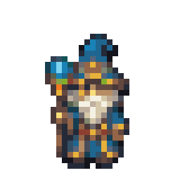
Pixel art sprite for a top-down 3/4 fantasy medieval RPG, matching the first attached village reference exactly: same colorful medieval palette, same dark 1px-style outline, same light from top-left, same orthogonal top-down 3/4 camera (not isometric, not side view). Use the second attached image only as the character proportion template: same chibi proportions and head size as the attached knight, with head and feet at comparable heights after conversion. Subject: a chibi wizard in a royal blue pointed hat and royal blue robe with thick gold trim, long white beard, holding one dark staff crowned with a bright cyan-blue orb. Front-facing idle pose looking straight toward the camera. Both sides of the face are visible and stance reads head-on, slightly viewed from above. Size feel: 16x24 silhouette inside 32x32; very simple chunky shapes, big head, few details, readable at native sprite size. The entire silhouette should fill the target body aspect ratio, keep equipment tucked in. Build the face out of a broad peach strip with two dark eyes and a big white beard block. Keep the pointed hat compact so the face sits at the knight's face height. Keep the orb adjacent to the hat and make blue the dominant color. ONE single subject, centered, full body visible, nothing cropped. Background: uniform solid flat pure magenta #FF00FF, no ground, no cast shadow on the background, no frame, no text, no watermark. Flat colors, hard edges, no gradients, no blur, no dithering. Any magical light must be represented by hard-edged adjacent color blocks without atmospheric bloom.
art/personagens/necromante-frente.png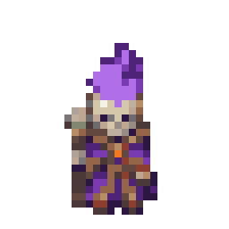
Generate one new pixel art sprite for a top-down 3/4 fantasy medieval RPG. Image 1 is the enlarged knight: use the same chibi proportions and head size as the attached knight, short compact body, forward-facing idle stance, both eyes visible, slightly viewed from above. Image 2 is the approved village: borrow its orthogonal camera, dark one-pixel-style outline, colorful chunky clusters and light from upper left. Subject: a skeleton necromancer standing idle, full body, large warm ivory bone-white skull with two dark sockets, a compact bright light-violet flame crest with hard-edged #B06EE8 clusters rising directly from the skull, and a short upright staff capped with a little ivory skull tucked immediately beside its body. The cloak is predominantly SATURATED PURPLE #7A3BB0 in broad clean areas across shoulders, chest and skirt, with #4E2378 shadows and #2A1640 deep folds, small gold edging and clasp. Keep its fabric visibly violet at a glance, with no blue or grey fabric. Fit the whole silhouette including staff and flames to a narrow 16:24 aspect ratio for downsampling to a 16x24 figure inside a 32x32 game sprite. Simple broad flat color clusters and a dark outline, clear stout chibi shape, feet visible, exactly one centered uncropped figure. Perfect uniform flat pure magenta #FF00FF background. No ground, cast shadow, gradient, glow bloom, blur, dithering, frame, text or watermark.
Pixel art sprite for a top-down 3/4 fantasy medieval RPG, matching the first attached village reference exactly: same colorful medieval palette, same dark 1px-style outline, same light from top-left, same orthogonal top-down 3/4 camera (not isometric, not side view). Use the second attached image only as the character proportion template: same chibi proportions and head size as the attached knight, with head and feet at comparable heights after conversion. Subject: a chibi skeleton necromancer with dusty desaturated violet robe and narrow gold trim, a chunky three-prong violet flame crown above its off-white skull, and a staff capped with a second very small skull. Front-facing idle pose looking straight toward the camera. Both sides of the face are visible and stance reads head-on, slightly viewed from above. Size feel: 16x24 silhouette inside 32x32; very simple chunky shapes, big head, few details, readable at native sprite size. The entire silhouette should fill the target body aspect ratio, keep equipment tucked in. Make robes predominantly muted lavender-grey (#6F6A6E) and blue-violet slate (#58657B) in large flat blocks; avoid bright magenta, black robes and orange except for a tiny gold trim. Give the flames a clear three-pronged solid silhouette in slate and mauve-gray. Make the main ivory skull broad with two square dark sockets. Match the knight's face and feet heights. ONE single subject, centered, full body visible, nothing cropped. Background: uniform solid flat pure magenta #FF00FF, no ground, no cast shadow on the background, no frame, no text, no watermark. Flat colors, hard edges, no gradients, no blur, no dithering. Any magical light must be represented by hard-edged adjacent color blocks without atmospheric bloom.
Pixel art sprite for a top-down 3/4 fantasy medieval RPG, matching the first attached village reference exactly: same colorful medieval palette, same dark 1px-style outline, same light from top-left, same orthogonal top-down 3/4 camera (not isometric, not side view). Use the second attached image only as the character proportion template: same chibi proportions and head size as the attached knight, with head and feet at comparable heights after conversion. Subject: a chibi skeleton necromancer with dark violet robe and thick gold trim, purple flames above the bare skull, and a staff capped with a small skull. Front-facing idle pose looking straight toward the camera. Both sides of the face are visible and stance reads head-on, slightly viewed from above. Size feel: 16x24 silhouette inside 32x32; very simple chunky shapes, big head, few details, readable at native sprite size. The entire silhouette should fill the target body aspect ratio, keep equipment tucked in. Make the main ivory skull broad with two square dark sockets; make the staff topper distinctly smaller than the skull of the necromancer. Use saturated violet clusters and one solid gold trim. Keep purple flame tips short and distinct so body and face align with the knight. ONE single subject, centered, full body visible, nothing cropped. Background: uniform solid flat pure magenta #FF00FF, no ground, no cast shadow on the background, no frame, no text, no watermark. Flat colors, hard edges, no gradients, no blur, no dithering. Any magical light must be represented by hard-edged adjacent color blocks without atmospheric bloom.
art/personagens/arqueira-frente.png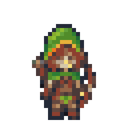
Pixel art sprite for a top-down 3/4 fantasy medieval RPG, matching the first attached village reference exactly: same colorful medieval palette, same dark 1px-style outline, same light from top-left, same orthogonal top-down 3/4 camera (not isometric, not side view). Use the second attached image only as the character proportion template: same chibi proportions and head size as the attached knight, with head and feet at comparable heights after conversion. Subject: a chibi female archer in a vivid forest-green hood and worn brown leather, holding a short curved bow with a dark string and wearing a quiver with arrow fletchings showing above one shoulder. Front-facing idle pose looking straight toward the camera. Both sides of the face are visible and stance reads head-on, slightly viewed from above. Size feel: 16x24 silhouette inside 32x32; very simple chunky shapes, big head, few details, readable at native sprite size. The entire silhouette should fill the target body aspect ratio, keep equipment tucked in. Green hood with a large clearly lit face opening, two bold eyes, green shoulder mantle and brown boots. Keep the bow close to the silhouette and the quiver tucked behind the shoulder. ONE single subject, centered, full body visible, nothing cropped. Background: uniform solid flat pure magenta #FF00FF, no ground, no cast shadow on the background, no frame, no text, no watermark. Flat colors, hard edges, no gradients, no blur, no dithering. Any magical light must be represented by hard-edged adjacent color blocks without atmospheric bloom.
art/personagens/sacerdote-frente.png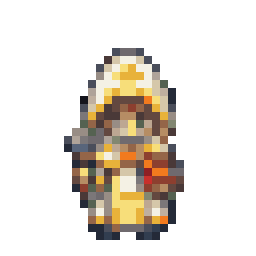
Pixel art sprite for a top-down 3/4 fantasy medieval RPG, matching the first attached village reference exactly: same colorful medieval palette, same dark 1px-style outline, same light from top-left, same orthogonal top-down 3/4 camera (not isometric, not side view). Use the second attached image only as the character proportion template: same chibi proportions and head size as the attached knight, with head and feet at comparable heights after conversion. Subject: a chibi temple priest in a predominantly ivory-white robe with gold borders, holding a compact metal mace and a closed holy book with a gold emblem. Front-facing idle pose looking straight toward the camera. Both sides of the face are visible and stance reads head-on, slightly viewed from above. Size feel: 16x24 silhouette inside 32x32; very simple chunky shapes, big head, few details, readable at native sprite size. The entire silhouette should fill the target body aspect ratio, keep equipment tucked in. White robe must be the biggest color block, use #F4F1E4 highlights and simple gold stripes. Make mace a single chunky metal head on a short handle, book a small block with a visible gold emblem. Exposed peach face and two boldly separated eyes. ONE single subject, centered, full body visible, nothing cropped. Background: uniform solid flat pure magenta #FF00FF, no ground, no cast shadow on the background, no frame, no text, no watermark. Flat colors, hard edges, no gradients, no blur, no dithering. Any magical light must be represented by hard-edged adjacent color blocks without atmospheric bloom.
art/personagens/ladino-frente.png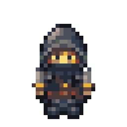
Pixel art sprite for a top-down 3/4 fantasy medieval RPG, matching the first attached village reference exactly: same colorful medieval palette, same dark 1px-style outline, same light from top-left, same orthogonal top-down 3/4 camera (not isometric, not side view). Use the second attached image only as the character proportion template: same chibi proportions and head size as the attached knight, with head and feet at comparable heights after conversion. Subject: a chibi rogue in charcoal gray and black leather gear with a dark scarf covering nose and mouth and one short silver dagger in each hand. Front-facing idle pose looking straight toward the camera. Both sides of the face are visible and stance reads head-on, slightly viewed from above. Size feel: 16x24 silhouette inside 32x32; very simple chunky shapes, big head, few details, readable at native sprite size. The entire silhouette should fill the target body aspect ratio, keep equipment tucked in. Use two prominent skin-tone and dark eye blocks above the scarf, two clearly separate silver blades held close on opposite sides, and large charcoal gray highlights to separate costume and black outline. ONE single subject, centered, full body visible, nothing cropped. Background: uniform solid flat pure magenta #FF00FF, no ground, no cast shadow on the background, no frame, no text, no watermark. Flat colors, hard edges, no gradients, no blur, no dithering. Any magical light must be represented by hard-edged adjacent color blocks without atmospheric bloom.
art/masmorra/monstros/lobo-frente.png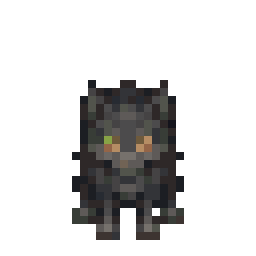
Pixel art sprite for a top-down 3/4 fantasy medieval action RPG (Diablo-like mood), same drawing style as the first attached village reference: same chunky shapes, same dark outline, same orthogonal top-down 3/4 camera (not isometric, not side view), same light from top-left. Mood and colors like the second attached image: earthy, grimy and dark, muted browns, moss greens, wet grey stone, old wood, mud; low saturation. Strong accents reserved for magic. Subject: a lean gray wolf with yellow eyes, standing idle on all fours, seen head-on, ears pricked. Front-facing idle pose looking straight toward the camera. Both sides of the face are visible and stance reads head-on, slightly viewed from above. Size feel: 28x20 silhouette inside 32x32; very simple chunky shapes, big head, few details, readable at native sprite size. The entire silhouette should fill the target body aspect ratio, keep equipment tucked in. The camera elevation shows a short run of grey back behind the head, a distinct narrow muzzle, two upright pointed ears and the complete outline including paws. Two clear mustard-yellow eyes in separate dark sockets. Use a low, wide 28-by-20 silhouette without forcing an unnaturally bulky body. ONE single subject, centered, full body visible, nothing cropped. Background: uniform solid flat pure magenta #FF00FF, no ground, no cast shadow on the background, no frame, no text, no watermark. Flat colors, hard edges, no gradients, no blur, no dithering. Any magical light must be represented by hard-edged adjacent color blocks without atmospheric bloom.
Pixel art sprite for a top-down 3/4 fantasy medieval action RPG (Diablo-like mood), same drawing style as the first attached village reference: same chunky shapes, same dark outline, same orthogonal top-down 3/4 camera (not isometric, not side view), same light from top-left. Mood and colors like the second attached image: earthy, grimy and dark, muted browns, moss greens, wet grey stone, old wood, mud; low saturation. Strong accents reserved for magic. Subject: a lean cool grey wolf with two unmistakable yellow eyes and a small black nose, standing still on all fours facing the camera head-on. Front-facing idle pose looking straight toward the camera. Both sides of the face are visible and stance reads head-on, slightly viewed from above. Size feel: 28x20 silhouette inside 32x32; very simple chunky shapes, big head, few details, readable at native sprite size. The entire silhouette should fill the target body aspect ratio, keep equipment tucked in. Use a very simple chunky sprite grid with a broad clear face of cool-grey shapes. Draw two yellow squares #E8B23A, at least two logical pixels each, on the front face on either side of the muzzle, low enough to be distinct from the ears. Use minimal fur texture and mostly flat neutral grays, visible torso and four paws; the slightly raised camera shows the shoulders and back. ONE single subject, centered, full body visible, nothing cropped. Background: uniform solid flat pure magenta #FF00FF, no ground, no cast shadow on the background, no frame, no text, no watermark. Flat colors, hard edges, no gradients, no blur, no dithering. Any magical light must be represented by hard-edged adjacent color blocks without atmospheric bloom.
Pixel art sprite for a top-down 3/4 fantasy medieval action RPG (Diablo-like mood), same drawing style as the first attached village reference: same chunky shapes, same dark outline, same orthogonal top-down 3/4 camera (not isometric, not side view), same light from top-left. Mood and colors like the second attached image: earthy, grimy and dark, muted browns, moss greens, wet grey stone, old wood, mud; low saturation. Strong accents reserved for magic. Subject: one lean charcoal-gray wolf monster staring straight at camera with enlarged vividly luminous yellow-gold magical eyes, rigid front-facing idle on four paws. Front-facing idle pose looking straight toward the camera. Both sides of the face are visible and stance reads head-on, slightly viewed from above. Size feel: 28x20 silhouette inside 32x32; very simple chunky shapes, big head, few details, readable at native sprite size. The entire silhouette should fill the target body aspect ratio, keep equipment tucked in. The luminous eyes are the only magical accent: use two broad pure golden yellow (#F7DE7A and #E8B23A) rectangular eye blocks, separated by several gray nose-bridge pixels and surrounded by deep charcoal. No eye shading or outlines inside the yellow shapes. The yellow eye areas should fill about 15 percent of the face. Distinct large pointed triangular ears, narrow gray muzzle, tiny black nose, short torso visible behind the shoulders, four paws. ONE single subject, centered, full body visible, nothing cropped. Background: uniform solid flat pure magenta #FF00FF, no ground, no cast shadow on the background, no frame, no text, no watermark. Flat colors, hard edges, no gradients, no blur, no dithering. Any magical light must be represented by hard-edged adjacent color blocks without atmospheric bloom.
art/masmorra/monstros/goblin-frente.png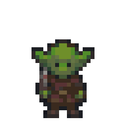
Pixel art sprite for a top-down 3/4 fantasy medieval action RPG (Diablo-like mood), same drawing style as the first attached village reference: same chunky shapes, same dark outline, same orthogonal top-down 3/4 camera (not isometric, not side view), same light from top-left. Mood and colors like the second attached image: earthy, grimy and dark, muted browns, moss greens, wet grey stone, old wood, mud; low saturation. Strong accents reserved for magic. Subject: a green goblin with wide pointed ears, short body, simple tattered brown tunic and a rusty iron dagger in one hand. Front-facing idle pose looking straight toward the camera. Both sides of the face are visible and stance reads head-on, slightly viewed from above. Size feel: 16x20 silhouette inside 32x32; very simple chunky shapes, big head, few details, readable at native sprite size. The entire silhouette should fill the target body aspect ratio, keep equipment tucked in. Big olive-green face with two distinct dark eyes and a broad nose that contrast on the face. Keep ears within 16-column silhouette. The broad rusty dagger sits close and is clearly distinct from the arm; mix a grey blade with a burnt-orange rust patch. ONE single subject, centered, full body visible, nothing cropped. Background: uniform solid flat pure magenta #FF00FF, no ground, no cast shadow on the background, no frame, no text, no watermark. Flat colors, hard edges, no gradients, no blur, no dithering. Any magical light must be represented by hard-edged adjacent color blocks without atmospheric bloom.
Pixel art sprite for a top-down 3/4 fantasy medieval action RPG (Diablo-like mood), same drawing style as the first attached village reference: same chunky shapes, same dark outline, same orthogonal top-down 3/4 camera (not isometric, not side view), same light from top-left. Mood and colors like the second attached image: earthy, grimy and dark, muted browns, moss greens, wet grey stone, old wood, mud; low saturation. Strong accents reserved for magic. Subject: one front-facing small olive-green goblin with pointed ears and a rusty dagger held upright tightly beside its torso, in a plain dark brown tunic. Front-facing idle pose looking straight toward the camera. Both sides of the face are visible and stance reads head-on, slightly viewed from above. Size feel: 16x20 silhouette inside 32x32; very simple chunky shapes, big head, few details, readable at native sprite size. The entire silhouette should fill the target body aspect ratio, keep equipment tucked in. Make its large head and ears visibly moss green (#518C29 and #518553) and slightly brighter than the body. Put two separate square near-black eyes on a flat green face, with one green pixel between. Use a clear four-step vertical silver-grey blade (#988D85) roughly two logical pixels wide, with exactly one red-brown rust cluster. A dark separator between the blade and tunic is essential. ONE single subject, centered, full body visible, nothing cropped. Background: uniform solid flat pure magenta #FF00FF, no ground, no cast shadow on the background, no frame, no text, no watermark. Flat colors, hard edges, no gradients, no blur, no dithering. Any magical light must be represented by hard-edged adjacent color blocks without atmospheric bloom.
art/masmorra/monstros/esqueleto-frente.png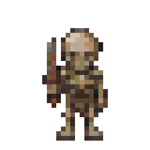
Pixel art sprite for a top-down 3/4 fantasy medieval action RPG (Diablo-like mood), same drawing style as the first attached village reference: same chunky shapes, same dark outline, same orthogonal top-down 3/4 camera (not isometric, not side view), same light from top-left. Mood and colors like the second attached image: earthy, grimy and dark, muted browns, moss greens, wet grey stone, old wood, mud; low saturation. Strong accents reserved for magic. Subject: one walking-dead skeleton standing still with an aged ivory skull and exposed rib cage, armed with a rusty sword. Front-facing idle pose looking straight toward the camera. Both sides of the face are visible and stance reads head-on, slightly viewed from above. Size feel: 16x24 silhouette inside 32x32; very simple chunky shapes, big head, few details, readable at native sprite size. The entire silhouette should fill the target body aspect ratio, keep equipment tucked in. Show a large plain ivory skull with two dark square sockets, chunky rib cage with three large alternating bone and dark bands, and two bony legs and feet. Keep the sword upright close to one forearm, with distinct partly rusty blade and simple crossguard. The skull and bones contrast with dark warm shadows. ONE single subject, centered, full body visible, nothing cropped. Background: uniform solid flat pure magenta #FF00FF, no ground, no cast shadow on the background, no frame, no text, no watermark. Flat colors, hard edges, no gradients, no blur, no dithering. Any magical light must be represented by hard-edged adjacent color blocks without atmospheric bloom.
art/masmorra/chefes/ogro-bastiao-frente.png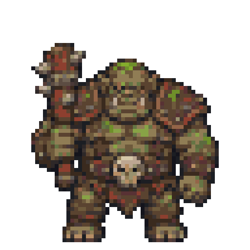
Pixel art sprite for a top-down 3/4 fantasy medieval action RPG (Diablo-like mood), same drawing style as the first attached village reference: same chunky shapes, same dark outline, same orthogonal top-down 3/4 camera (not isometric, not side view), same light from top-left. Mood and colors like the second attached image: earthy, grimy and dark, muted browns, moss greens, wet grey stone, old wood, mud; low saturation. Strong accents reserved for magic. Subject: a huge muscular moss-green ogre bastion boss idle with both feet planted, a hefty spiked wooden club held upright close to his shoulder, brown leather pauldrons, and a heavy belt with an ivory skull buckle. Front-facing idle pose looking straight toward the camera. Both sides of the face are visible and stance reads head-on, slightly viewed from above. Size feel: 48x56 silhouette inside 64x64; very simple chunky shapes, big head, few details, readable at native sprite size. The entire silhouette should fill the target body aspect ratio, keep equipment tucked in. Use a massive dark outlined upper body, distinct face with two eyes and lower tusks, thick leather on both shoulders, and a chunky pale skull at the waist. The club should clearly show several large metal spikes and fit inside the overall silhouette without shrinking the boss. High contrast within the restrained greens and warm browns. ONE single subject, centered, full body visible, nothing cropped. Background: uniform solid flat pure magenta #FF00FF, no ground, no cast shadow on the background, no frame, no text, no watermark. Flat colors, hard edges, no gradients, no blur, no dithering. Any magical light must be represented by hard-edged adjacent color blocks without atmospheric bloom.
Todas as tentativas descartadas em art/rejeitadas/sprites/, com o motivo registrado no nome do arquivo e em prompts.md. Inclui o necromante cinza (necromante-frente--sem-roxo-na-paleta.png), exibido em prévia 8× gerada com Pillow (nearest neighbor) dentro da pasta do cartão.
art/rejeitadas/sprites/cavaleiro-frente--rosto-e-leao-ilegiveis.pngPixel art sprite for a top-down 3/4 fantasy medieval RPG, matching the attached village reference exactly: same crisp dark 1px-style outline, same light from top-left, same orthogonal top-down 3/4 camera (not isometric, not side view), same character palette and style as the small village guards, especially the red-plumed guard by the fountain. Subject: one front-facing idle chibi knight with silver armor, visible face with eyes under open helmet, red cape, red helmet plume, compact red shield with gold lion silhouette and a short silver sword held close upright. Size feel: complete silhouette fits 16x24 inside 32x32, proportion width:height about 2:3. Very simple chunky shapes, big head, few details, readable at 32x32. Make both eyes large enough to survive reduction. Face and both boots point directly toward viewer, slightly elevated orthogonal view showing helmet crown. Keep arms and accessories close so the main figure stays large. ONE single subject, centered, full body visible, nothing cropped. Background: uniform solid flat pure magenta #FF00FF, no ground, no cast shadow on the background, no frame, no text, no watermark. Flat colors, hard edges, no gradients, no glow, no blur, no dithering.
art/rejeitadas/sprites/goblin-frente--adaga-fundida-e-rosto-escuro.pngPixel art sprite for a top-down 3/4 fantasy medieval action RPG (Diablo-like mood), same drawing style as the first attached village reference: same chunky shapes, same dark outline, same orthogonal top-down 3/4 camera (not isometric, not side view), same light from top-left. Mood and colors like the second attached image: earthy, grimy and dark, muted browns, moss greens, wet grey stone, old wood, mud; low saturation. Strong accents reserved for magic. Subject: a green goblin with wide pointed ears, short body, simple tattered brown tunic and a rusty iron dagger in one hand. Front-facing idle pose looking straight toward the camera. Both sides of the face are visible and stance reads head-on, slightly viewed from above. Size feel: 16x20 silhouette inside 32x32; very simple chunky shapes, big head, few details, readable at native sprite size. The entire silhouette should fill the target body aspect ratio, keep equipment tucked in. Big olive-green face with two distinct dark eyes and a broad nose that contrast on the face. Keep ears within 16-column silhouette. The broad rusty dagger sits close and is clearly distinct from the arm; mix a grey blade with a burnt-orange rust patch. ONE single subject, centered, full body visible, nothing cropped. Background: uniform solid flat pure magenta #FF00FF, no ground, no cast shadow on the background, no frame, no text, no watermark. Flat colors, hard edges, no gradients, no blur, no dithering. Any magical light must be represented by hard-edged adjacent color blocks without atmospheric bloom.
art/rejeitadas/sprites/lobo-frente--olhos-amarelos-ilegiveis.pngPixel art sprite for a top-down 3/4 fantasy medieval action RPG (Diablo-like mood), same drawing style as the first attached village reference: same chunky shapes, same dark outline, same orthogonal top-down 3/4 camera (not isometric, not side view), same light from top-left. Mood and colors like the second attached image: earthy, grimy and dark, muted browns, moss greens, wet grey stone, old wood, mud; low saturation. Strong accents reserved for magic. Subject: a lean gray wolf with yellow eyes, standing idle on all fours, seen head-on, ears pricked. Front-facing idle pose looking straight toward the camera. Both sides of the face are visible and stance reads head-on, slightly viewed from above. Size feel: 28x20 silhouette inside 32x32; very simple chunky shapes, big head, few details, readable at native sprite size. The entire silhouette should fill the target body aspect ratio, keep equipment tucked in. The camera elevation shows a short run of grey back behind the head, a distinct narrow muzzle, two upright pointed ears and the complete outline including paws. Two clear mustard-yellow eyes in separate dark sockets. Use a low, wide 28-by-20 silhouette without forcing an unnaturally bulky body. ONE single subject, centered, full body visible, nothing cropped. Background: uniform solid flat pure magenta #FF00FF, no ground, no cast shadow on the background, no frame, no text, no watermark. Flat colors, hard edges, no gradients, no blur, no dithering. Any magical light must be represented by hard-edged adjacent color blocks without atmospheric bloom.
art/rejeitadas/sprites/lobo-frente--segunda-tentativa-olhos-apagados.pngPixel art sprite for a top-down 3/4 fantasy medieval action RPG (Diablo-like mood), same drawing style as the first attached village reference: same chunky shapes, same dark outline, same orthogonal top-down 3/4 camera (not isometric, not side view), same light from top-left. Mood and colors like the second attached image: earthy, grimy and dark, muted browns, moss greens, wet grey stone, old wood, mud; low saturation. Strong accents reserved for magic. Subject: a lean cool grey wolf with two unmistakable yellow eyes and a small black nose, standing still on all fours facing the camera head-on. Front-facing idle pose looking straight toward the camera. Both sides of the face are visible and stance reads head-on, slightly viewed from above. Size feel: 28x20 silhouette inside 32x32; very simple chunky shapes, big head, few details, readable at native sprite size. The entire silhouette should fill the target body aspect ratio, keep equipment tucked in. Use a very simple chunky sprite grid with a broad clear face of cool-grey shapes. Draw two yellow squares #E8B23A, at least two logical pixels each, on the front face on either side of the muzzle, low enough to be distinct from the ears. Use minimal fur texture and mostly flat neutral grays, visible torso and four paws; the slightly raised camera shows the shoulders and back. ONE single subject, centered, full body visible, nothing cropped. Background: uniform solid flat pure magenta #FF00FF, no ground, no cast shadow on the background, no frame, no text, no watermark. Flat colors, hard edges, no gradients, no blur, no dithering. Any magical light must be represented by hard-edged adjacent color blocks without atmospheric bloom.
art/rejeitadas/sprites/necromante-frente--roxo-neutralizado.pngPixel art sprite for a top-down 3/4 fantasy medieval RPG, matching the first attached village reference exactly: same colorful medieval palette, same dark 1px-style outline, same light from top-left, same orthogonal top-down 3/4 camera (not isometric, not side view). Use the second attached image only as the character proportion template: same chibi proportions and head size as the attached knight, with head and feet at comparable heights after conversion. Subject: a chibi skeleton necromancer with dark violet robe and thick gold trim, purple flames above the bare skull, and a staff capped with a small skull. Front-facing idle pose looking straight toward the camera. Both sides of the face are visible and stance reads head-on, slightly viewed from above. Size feel: 16x24 silhouette inside 32x32; very simple chunky shapes, big head, few details, readable at native sprite size. The entire silhouette should fill the target body aspect ratio, keep equipment tucked in. Make the main ivory skull broad with two square dark sockets; make the staff topper distinctly smaller than the skull of the necromancer. Use saturated violet clusters and one solid gold trim. Keep purple flame tips short and distinct so body and face align with the knight. ONE single subject, centered, full body visible, nothing cropped. Background: uniform solid flat pure magenta #FF00FF, no ground, no cast shadow on the background, no frame, no text, no watermark. Flat colors, hard edges, no gradients, no blur, no dithering. Any magical light must be represented by hard-edged adjacent color blocks without atmospheric bloom.
art/rejeitadas/sprites/necromante-frente--sem-roxo-na-paleta.png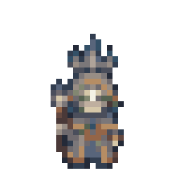
Pixel art sprite for a top-down 3/4 fantasy medieval RPG, matching the first attached village reference exactly: same colorful medieval palette, same dark 1px-style outline, same light from top-left, same orthogonal top-down 3/4 camera (not isometric, not side view). Use the second attached image only as the character proportion template: same chibi proportions and head size as the attached knight, with head and feet at comparable heights after conversion. Subject: a chibi skeleton necromancer with dusty desaturated violet robe and narrow gold trim, a chunky three-prong violet flame crown above its off-white skull, and a staff capped with a second very small skull. Front-facing idle pose looking straight toward the camera. Both sides of the face are visible and stance reads head-on, slightly viewed from above. Size feel: 16x24 silhouette inside 32x32; very simple chunky shapes, big head, few details, readable at native sprite size. The entire silhouette should fill the target body aspect ratio, keep equipment tucked in. Make robes predominantly muted lavender-grey (#6F6A6E) and blue-violet slate (#58657B) in large flat blocks; avoid bright magenta, black robes and orange except for a tiny gold trim. Give the flames a clear three-pronged solid silhouette in slate and mauve-gray. Make the main ivory skull broad with two square dark sockets. Match the knight's face and feet heights. ONE single subject, centered, full body visible, nothing cropped. Background: uniform solid flat pure magenta #FF00FF, no ground, no cast shadow on the background, no frame, no text, no watermark. Flat colors, hard edges, no gradients, no blur, no dithering. Any magical light must be represented by hard-edged adjacent color blocks without atmospheric bloom.